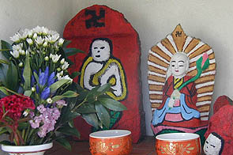
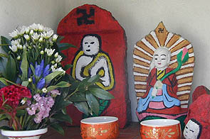
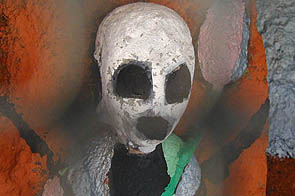

化粧地蔵ツアー１/福井県小浜市
福井である。化粧地蔵ツアーの出発点は小浜市である。
小浜までの道中対抗車には自衛隊の軍トラックがガンガンすれ違い、原発関係施設が立ち並ぶ風景に緊張しつつ小浜市内に入ると今度はいきなり若狭最大のお祭りといわれる放生会と遭遇してしまい何がなんだか訳が判らなくなりながらも小浜市街の北にある西津地区に到着した。
西津地区は西津漁港を中心としたいかにも漁港の街といった落ち着いた雰囲気の街であり、同時に日本有数の化粧地蔵の多発地帯である。
西津橋を渡り西津地区に入ったものの化粧地蔵が見当たらない。具体的にどの辺にあるのかは確認していない（事前に確認しろ、といっても無理な話だが）。「もしかして化粧地蔵って1個か2個位しかないのでは・・・」という不安が頭をよぎる。
事前に観光案内所の方に電話で聞いてみたら「あ〜、西津に行けばどっこにでもありますよお〜」との事だったのであまり詳しくはリサーチしていなかったのだ。
・・・ちょっと焦りながらも裏道に入り海岸沿いの公園の片隅に祠を見つけた。
中を除くと・・・
おおお、あった！
第一村人、じゃなくて第一化粧地蔵発見！
子供特有のポンチな画風、光背は惜し気もなく金銀赤の揃い踏みである。素晴らしい！
気がつくと、すぐ近くにも祠があり中にはこんな素晴らしいお地蔵さんが。
素晴らしい。日章旗のような光背が目出たい。
２〜３体見つけてみて幾らかコツのようなものが判ってきた。
化粧地蔵は道と道の辻にある事が多く、また、色を塗られているので祠の中に入っている場合がほとんどだ。
ちなみにここ西津の小松原周辺の場合は祠の中の地蔵はほぼ100パーセント化粧地蔵でした。
一度コツを覚えてしまうと見つけるのも早くなる。と、いうより最初に発見したところが密集地帯のど真ん中だったのだ。
次から次へと傑作化粧地蔵が姿をあらわす。
全員居眠り中。右のだんご三兄弟みたいなものは五輪塔の宝珠部分。そんなトコまで塗らなくたって、しかも顔描かなくても・・・
 上写真左のアベック地蔵もオシャレな色使いで良いが、右側の顔がインパクト強烈でした。
比較的大きなお堂に祀られていたのは六地蔵。
赤と黒と白のみで構成されいる現代アートっぽい作品。で、左右のお地蔵さんの姿がかなり抽象画化していて大変よろしい。
台座がベンガラで赤く染まっているのが化粧地蔵の歴史を感じさせてくれる。
とにかく表情がイイ。
信仰の対象だからといって気負う事もなくリラックスした状態で化粧を施していく子供達の楽しそうな様子がそのまま伝わってくるようではないか。
木造の祠以外にもこのような立派なコンクリートのお堂も多い。このようなお堂が通りのあちこちに建っているが勿論、誰も邪魔などとは思わない筈。

小さな神社の横に建つお堂。屋根が青く塗られていて目立つ。左のお地蔵さんはもはや抽象画の領域に突入している。
上写真左のアベック地蔵もオシャレな色使いで良いが、右側の顔がインパクト強烈でした。
比較的大きなお堂に祀られていたのは六地蔵。
赤と黒と白のみで構成されいる現代アートっぽい作品。で、左右のお地蔵さんの姿がかなり抽象画化していて大変よろしい。
台座がベンガラで赤く染まっているのが化粧地蔵の歴史を感じさせてくれる。
とにかく表情がイイ。
信仰の対象だからといって気負う事もなくリラックスした状態で化粧を施していく子供達の楽しそうな様子がそのまま伝わってくるようではないか。
木造の祠以外にもこのような立派なコンクリートのお堂も多い。このようなお堂が通りのあちこちに建っているが勿論、誰も邪魔などとは思わない筈。

小さな神社の横に建つお堂。屋根が青く塗られていて目立つ。左のお地蔵さんはもはや抽象画の領域に突入している。
チョット宝塚、はいってます。

この地域は海に面した通りとそれに平行した通りの間に細い通りが梯子のように延々と続いているのだがその狭い通り一本に一個のペースで化粧地蔵が祀られた祠があるのだ。
何といってもどの地蔵にも綺麗な花が手向けられていて茶碗に水があげられている。
恐らくほとんど毎日近所の人がケアしているのだろう。
私が訪れた時も線香の煙りが上がっている化粧地蔵を幾つか見た。

コレは一寸怖かったです・・・
 家にくっついたタイプの祠。中には真っ赤っかのお地蔵さんが。
家にくっついたタイプの祠。中には真っ赤っかのお地蔵さんが。
この辺りは井戸も多く雰囲気の良い街だった。 何故か女性に描きかえられたお地蔵さん。女の子が描いたのだろうか。
集落の北にある寺の境内には無縁なのだろうか化粧地蔵がまとめて祀ってあった。
かつては化粧されていたであろう、うっすらとベンガラの色が付いている石仏はちょっと悲しそうだった。
墓地には無縁塚があったが、この丸い石塔とかに色を塗っちゃう、というのはどうでしょうか？
衣装やよだれかけも綺麗だったので何年かに一回は「誰か」がつくっているのでしょう。
篤いぜ！地蔵信仰。
化粧地蔵ツアートップに戻る 化粧地蔵ツアー２に行きましょう
珍寺大道場 HOME